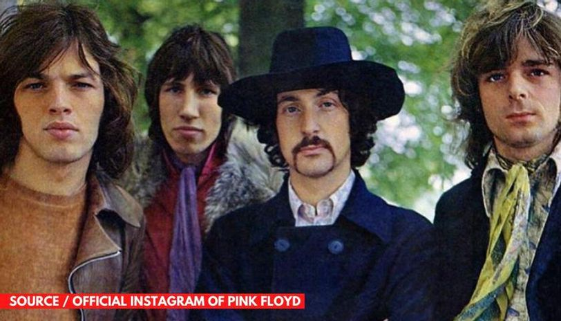

British Bands
- The Beatles
- Pink Floyd
The Beatles were the beginning of the era of rock in Europe, and with their own style, they infected the whole world with the new music that was taking over the radio stations.

Pink Floyd gave to the music the essence of improvisation and avant-garde. They broke paradigms and created a more dramatic and elaborate rock. Pink floyd were not afraid in experimenting wih new sounds and harmonies, in order to obtain a very special ambience in their concerts.
